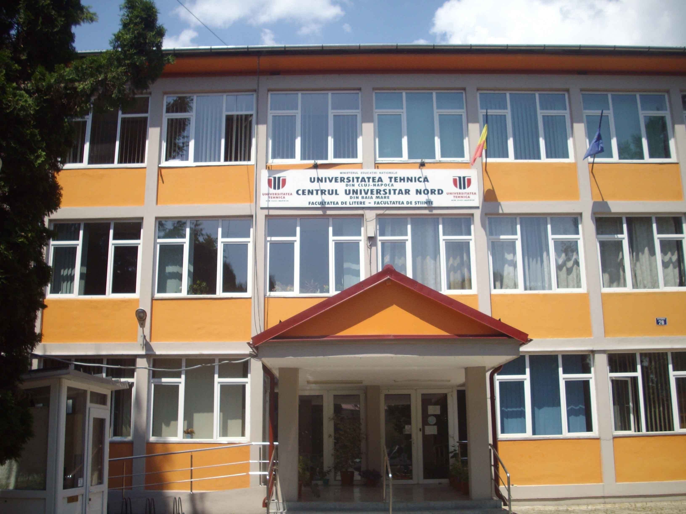
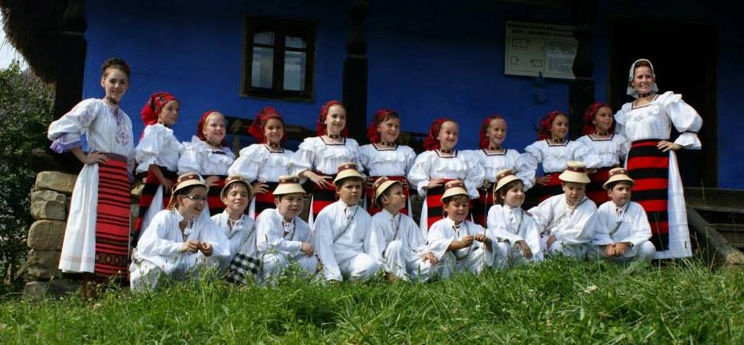
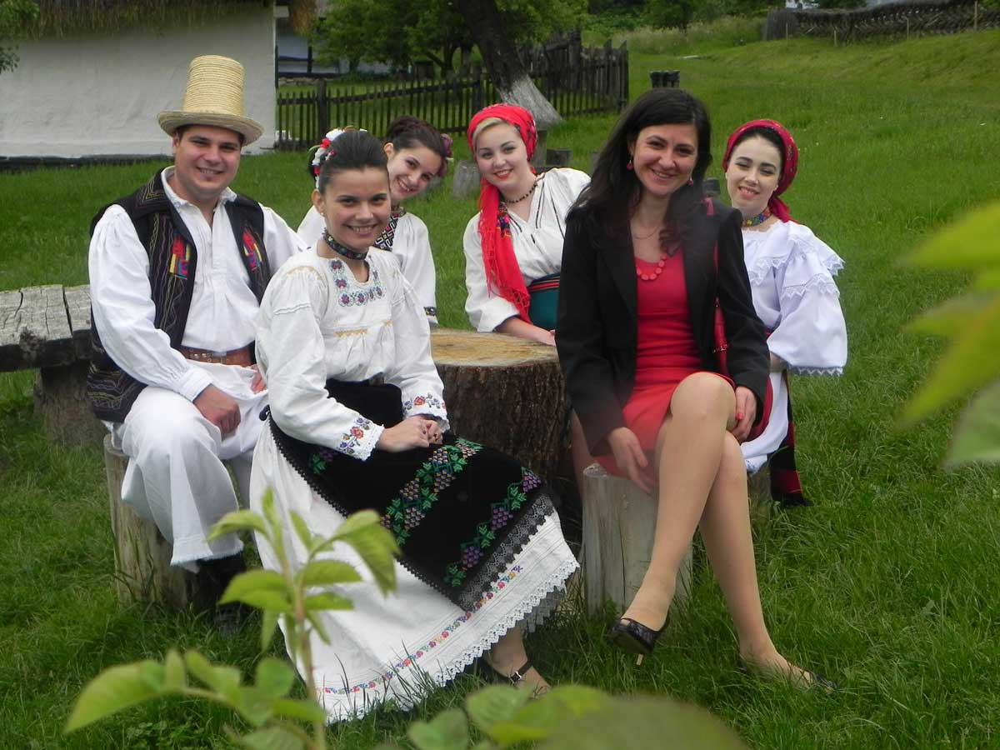
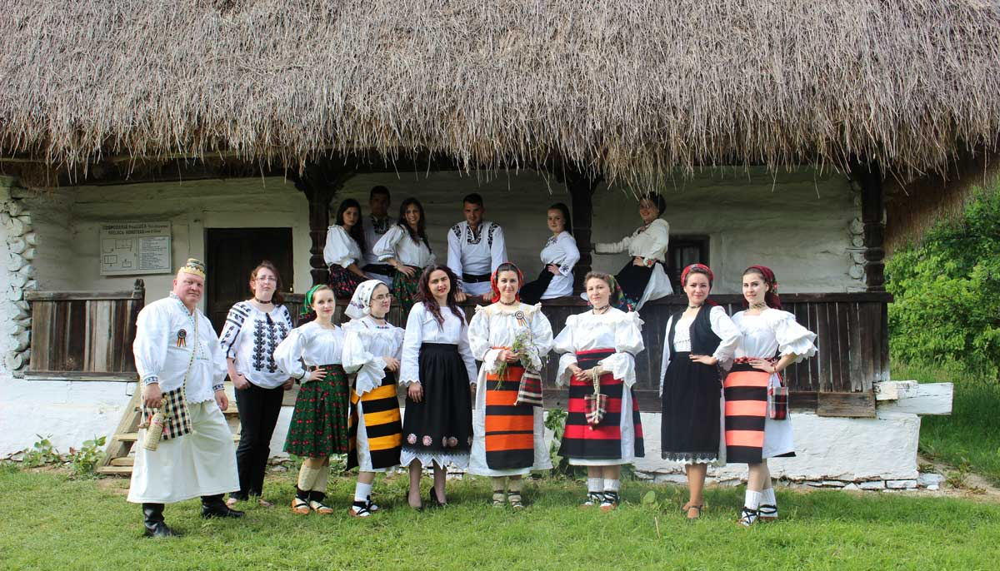
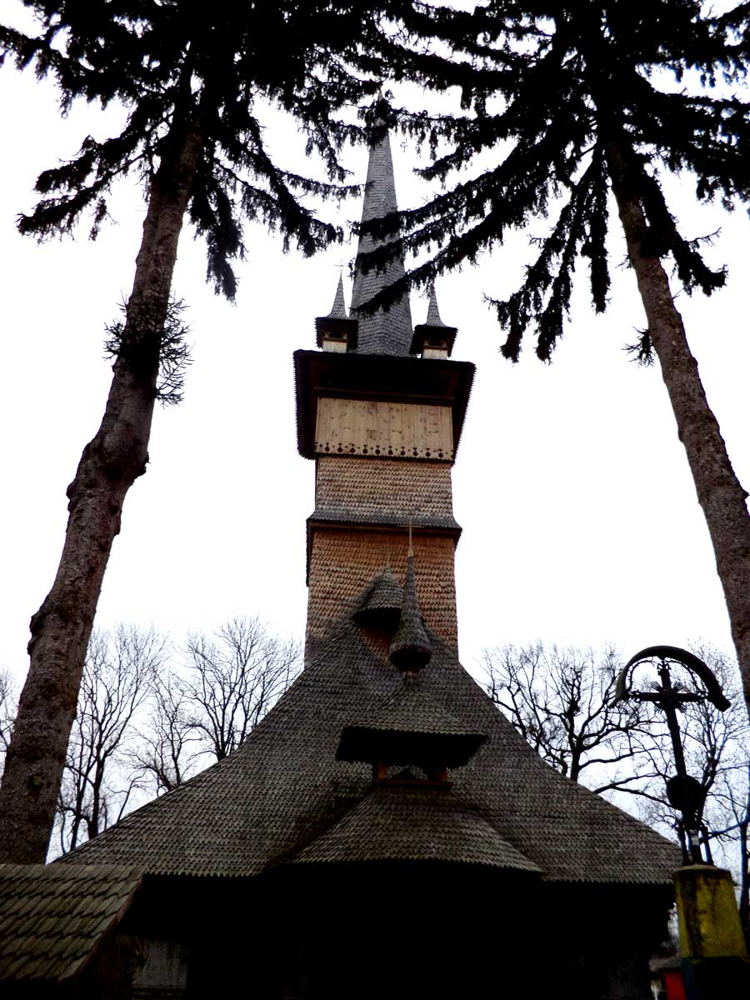
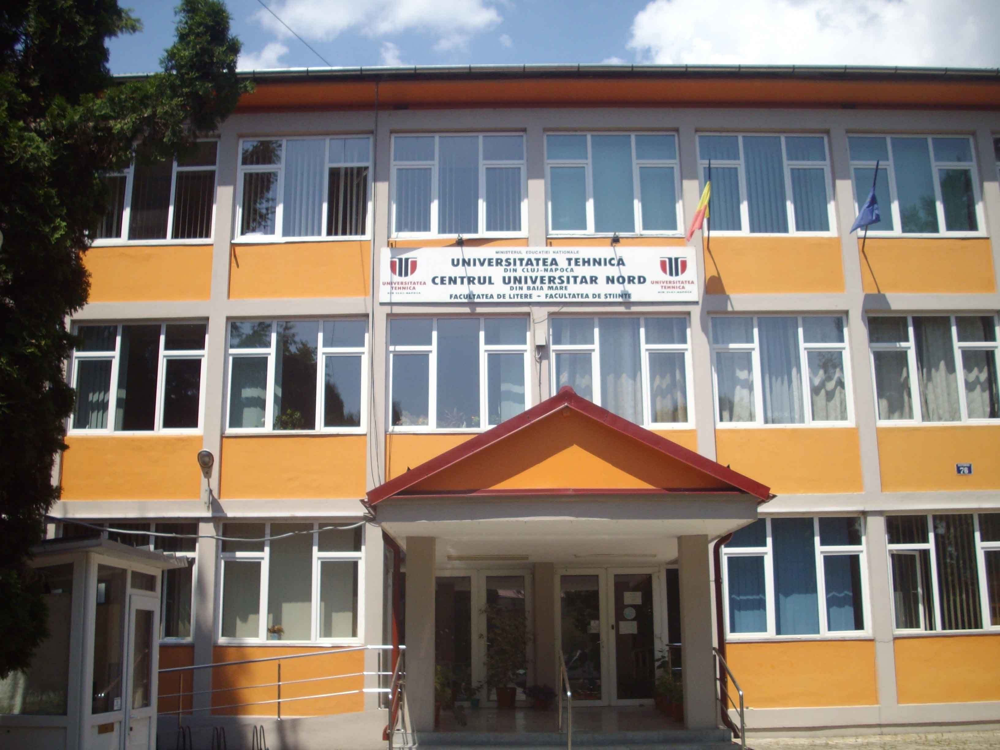
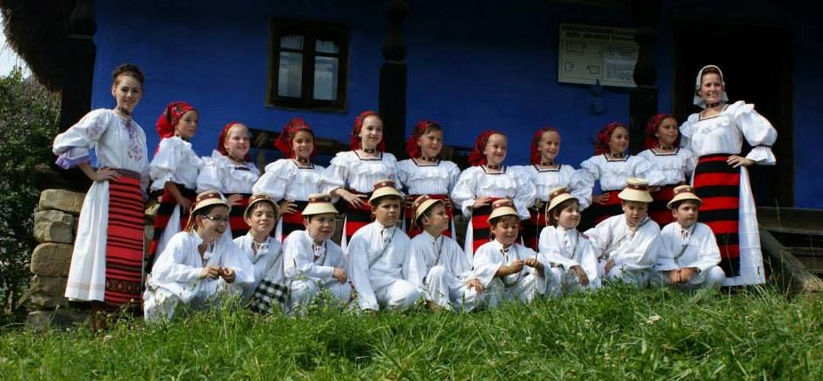
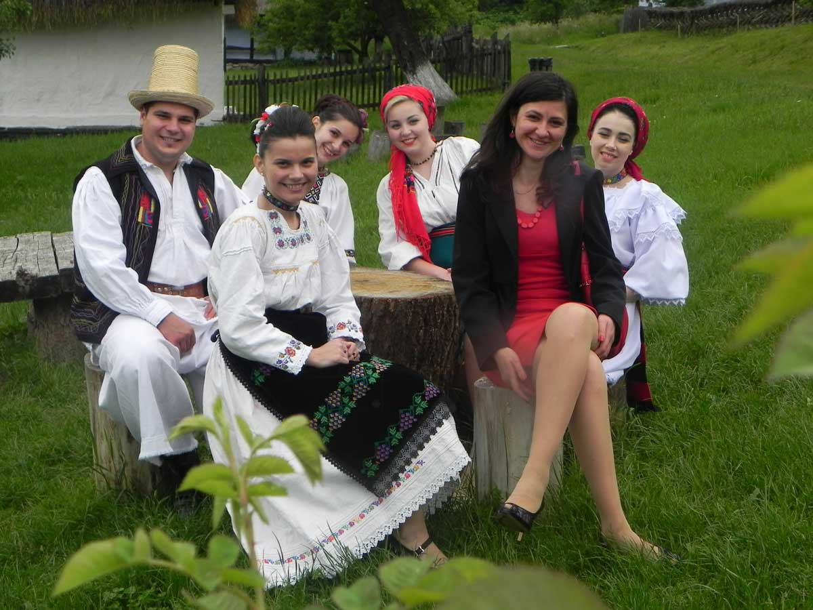
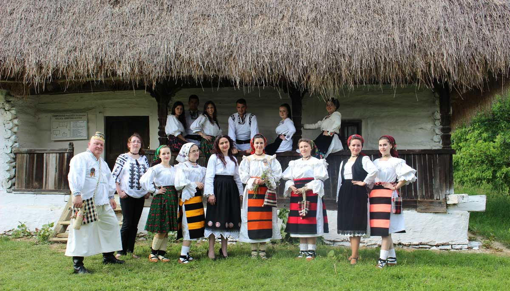
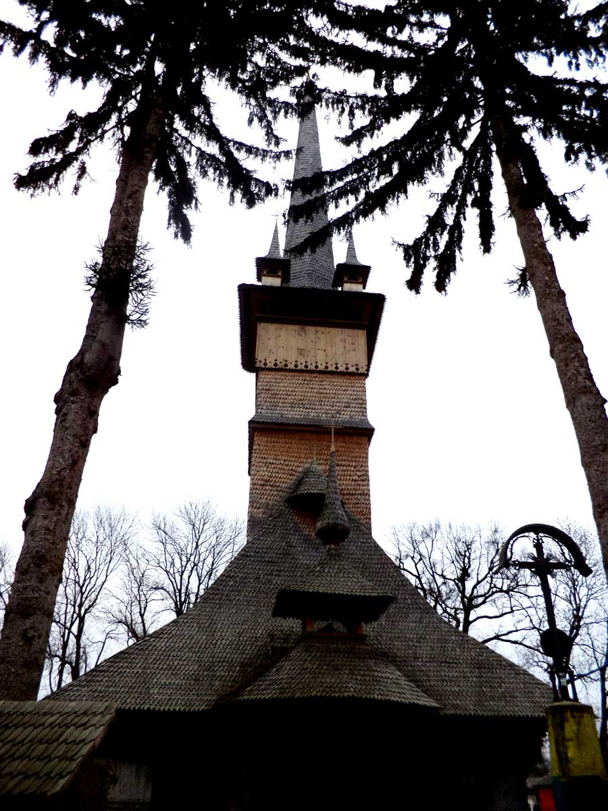

Conferinta internationala de etnologie,
traditii, identitate nationala,
dialog intercultural,diversitate (TINDID)
Conferința internaționala de etnologie,
Tradiții, identitate națională,
dialog intercultural, diversitate (TINDID 3)
Ediţia a III-a
Baia Mare 31 septembrie 2017
Au mai ramas
Secţiunile conferinței:
- DINAMICA MANIFESTĂRILOR FOLCLORICE. TRADIȚIE ȘI INOVAŢIE;
- UNITATE ŞI DIVERSITATE ÎN CONTEXT EUROPEAN. DIALOGUL CULTURILOR ÎN SINCRONIE ȘI DIACRONIE;
- PERSPECTIVA INTERDISCIPLINARĂ, PLURIDISCIPLINARĂ ŞI TRANSDISCIPLINARĂ ÎN ÎNVĂȚĂMÂNTUL UNIVERSITAR ȘI PREUNIVERSITAR
(Folclorul și literatura, Antropologia comunicării și Antropologia culturală, Etnologia și lingvistica,
Arta tradiţională şi Arta modernă, Etnologia rurală şi Etnologia urbană; Identitate culturală;
Cultura spirituală, Sacru şi Profan etc.)
- TRADIȚII, IDENTITATE NAȚIONALĂ, DIALOG INTERCULTURAL, DIVERSITATE;
- RELAŢIA DINTRE CADRUL DIDACTIC, STUDENŢI ŞI MASTERANZI. SECȚIUNE SPECIALĂ PENTRU STUDENȚI ȘI MASTERANZI
Limbi oficiale ale conferinţei: româna, engleza, franceza, italiana, germana, spaniola.
Prezentarea lucrărilor: 15 de minute ( 10 + 5 minute de discuţii).
Locul desfășurării:
Conferința va avea loc în clădirea Bibliotecii Județene „Petre Dulfu” din Baia Mare (Bulevardul Independenţei, nr. 4B), inclusiv în incinta Facultății de Litere a Centrului Universitar Nord din Baia Mare (strada Victoriei, nr. 76). Toate sălile în care se vor desfășura sesiunile sunt echipate cu calculatoare (Windows, Microsoft Office) și videoproiectoare. Există conexiune la internet atât la Biblioteca Județeană, cât și în clădirile universității și la hoteluri. Biblioteca Județeană „Petre Dulfu” și Facultatea de Litere a Centrului Universitar din Baia Mare sunt situate în centrul orașului, la câteva sute de metri de orice punct de cazare și foarte aproape de Restaurantul Universitar.